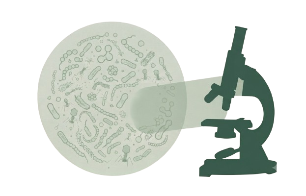

Our research explores the unique microbial signatures found on human skin and their potential to assist in personal identification. We combine cutting-edge sequencing technologies with machine learning to build the first comprehensive skin microbiome database for the UAE.
Join Our Research
Investigating microbial communities associated with human skin.
Developing robust models for microbial-based human identification.
Processing sequencing data and identifying microbial signatures.
Comparing microbiomes across populations and environments.
Forensic Science International: Genetics
2023
Nature Reviews Microbiology
2022
Create a comprehensive and ethically sourced database.
Enhance the reliability of microbiome-based identification.
Build robust, interpretable models for real-world forensic use.
Work with local and international partners to advance the field.
Ensure ethical practices and environmental responsibility.